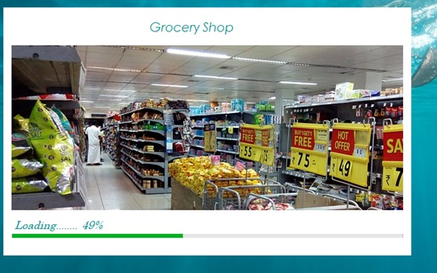
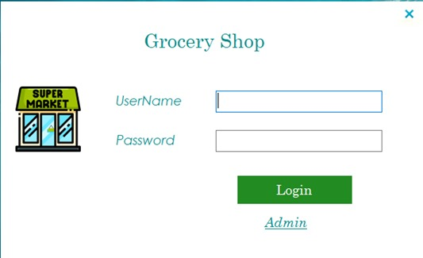
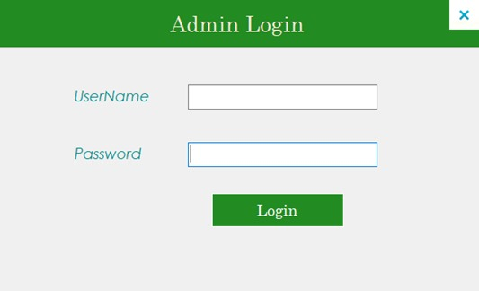
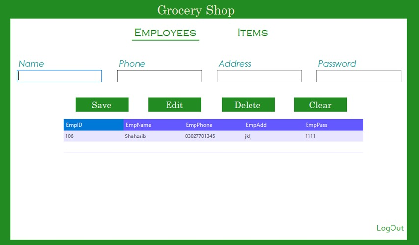
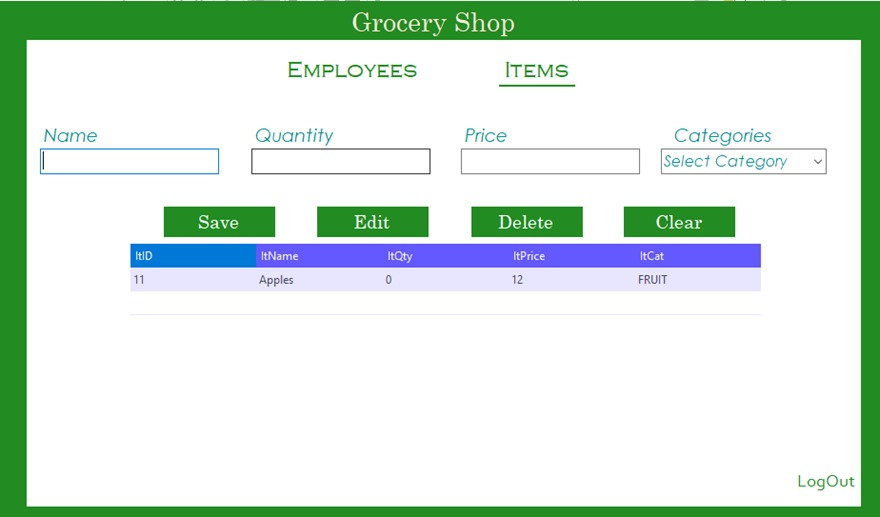
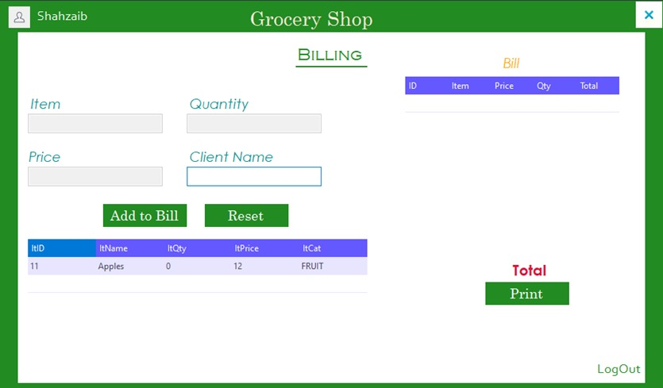

Grocery Store Management System👇






Description:
-
The system is designed to manage inventory and customer orders for a small to medium-sized grocery store.
-
The system has two types of users: admin and employees.
-
The admin can add, edit, and delete employee profiles, as well as manage inventory items and their quantities.
-
Employee users can log in to the system using their assigned username and password and view the inventory items available in the store.
-
Employees can also add items to a customer's order and print the customer's bill.
Technologies Used:
-
dotNET Framework
-
C#
-
MS SQL Server
Project Link:
View Project